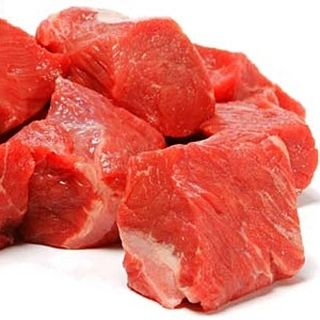
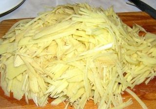
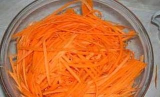
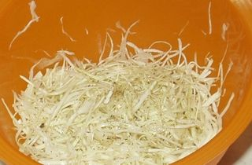
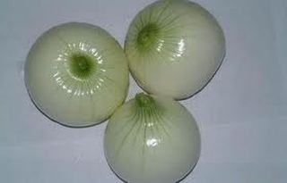

Шаг 1: Обрабатываем мясо.

Мясо говядины очистить от прожилок, хорошо промываем под проточной водой. Берём доску и нарезаем мясо тонкой соломкой. Сковороду ставим на плиту, вливаем подсолнечное масло и обжариваем до готовности мясо. Во время жарки несколько раз следует перемешать, чтобы мясо не подгорело. За 5 минут до готовности накрываем сковороду крышкой, чтобы потомилось мясо немного и смягчилось. После того как наше мясо готово, перекладываем на тарелку и остужаем его до комнатной температуры.
Шаг 2: Подготовим картофель.

Необходимо очистить картофель и вымыть под краном. Выложить на салфетку и дать стечь воде. Берём тёрку (для корейской морковки) и натираем на ней очищенный сырой картофель. Также обжариваем на растительном масле, на среднем огне. Не следует доводить картофель до полной готовности, лучше слегка до полуготовности, он должен быть полусырой. Перекладываем на тарелку и остужаем его.
Шаг 3: Подготовим морковь и свеклу.

Морковь, свеклу хорошо моем под водой. Натираем на тёрке (для корейской морковки) овощи они будут у нас сырыми (при подаче на стол сырых овощей не ощущается, никто из гостей и не догадается). Откладываем в сторону по отдельным тарелкам.
Шаг 4: Подготовим белокочанную капусту.

Белокочанную капусту моем, очищаем и стараемся нарезать тонкой соломкой. Перекладываем отдельно на тарелку в сторону (кому в тягость резать тонко, можно натереть на терке для капусты, от этого вкус салата не меняется).
Шаг 5: Подготовим репчатый лук.

Репчатый лук очищаем от кожуры и моем, режем на тонкие полоски и заливаем его кипятком на минут 20 (это делается для того, чтобы убрать резкий запах и горечь). После немного отжимаем лук и перекладываем на тарелку.